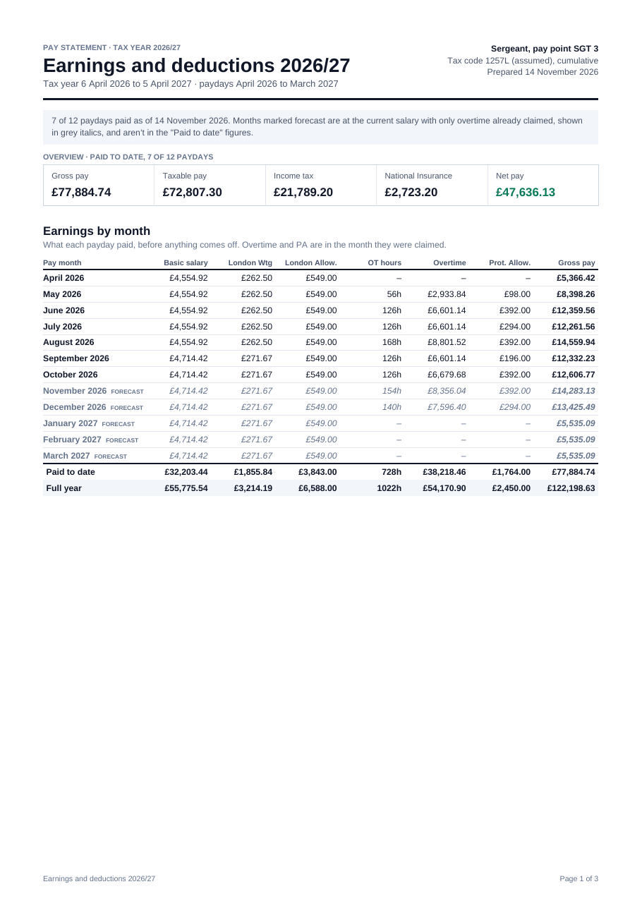

User guide · November 2026
Overtime &
Shift Tracker
Log your overtime and Protection Allowance, see what it'll actually pay after tax, and keep track of what still needs submitting.
Pay worked out the way payroll does it: tax code 1257L month by month, NI on each month's pay, police pension before tax.
Your salary, allowances, overtime and monthly deductions, so the take-home figure matches your payslip.
A tidy PDF pay statement for your accountant, with a £100k+ calculator if you cross £100,000.
End-to-end encrypted, and synced across your phone and computer.
Put it on your home screen
iPhone
Open the app in Safari, tap the Share button, then Add to Home Screen.
Android
Open it in Chrome, tap the ⋮ menu, then Install app (or Add to Home screen).
Computer
In Chrome or Edge, click the install icon at the right of the address bar, or just bookmark it.
More.. · Tax & £100k+ calculator
Your tax band and the £100k taper
Two columns side by side: Actual, the paydays so far this tax year, and Forecast, the full year at your current pay and overtime.
| Gross | Salary, allowances, overtime and PA. |
| Pension | Police pension, taken before tax, at your tier's rate. |
| Personal allowance | Normally £12,570. Above £100,000 (after pension) you lose £1 of it for every £2 over. |
| Extra tax | The tax from that lost allowance. Payroll keeps giving you the full allowance during the year, so this usually arrives later as a tax code change or a Self Assessment bill. |
Full breakdown shows the tax band by band, NI and net pay.
Why it matters: between £100,000 and £125,140 each extra £1 of overtime costs about 60p in tax, plus 2p NI. Pension contributions or Gift Aid can bring it back under.
For guidance only. Check anything important against your payslip or with HMRC.
More.. · Reports & export
A pay statement for your accountant NEW
Reports & export › Export to PDF or spreadsheet › PDF, then choose a Pay month, a Custom range or a whole Tax year, and Create PDF. Tap Save as PDF to keep it: on a phone that opens the share sheet, so you can save it to Files or email it.
What's in the tax year statement
- An overview: gross, taxable pay, tax, NI and net pay.
- Earnings by month: basic salary, London Weighting and Allowance, overtime hours and pay, Protection Allowance, gross.
- Deductions by month: pension, salary sacrifice, taxable pay, tax, NI, your other deductions and net pay.
- Overtime hours at each rate, your deductions listed, and the year's totals.
- £100k+ calculator, if taxable pay is over £100,000: the allowance lost, the extra tax, the overtime in the 60% band, and what a pension contribution or Gift Aid would take to get back to £100k.
- Notes for a tax return: pension relief, salary sacrifice, the £140 uniform allowance and professional subscriptions.
Taxable pay should match the "Pay" figure on your P60. Give your accountant the statement with your P60 and payslips; they're still the final word.
Leave Sanitise notes ticked when sharing: shift notes can hold operationally sensitive detail. Spreadsheet exports every shift as an Excel file instead.


Page 1, and the £100k+ calculator (sample figures)
Good to know
Sync, updates and privacy
Using more than one device
Sign in with the same account on your phone and computer. Shifts, TOIL, settings, deductions and your theme sync automatically, usually within seconds, and as soon as you bring the app back to the front. No signal? Keep going: changes are saved on the device and sent up when you're back online. If the same thing is changed on two devices, the most recent change wins.
Updates
When a new version is ready you'll see an update prompt. Tap it to load the latest version. On a computer it stays until you do, so if something looks out of date on one device, update that one first.
Your data
- Encrypted end to end. Shifts and settings are encrypted on your device with a key only your password or recovery word can unlock. Nobody else, including the app's developer, can read them.
- Back up from More › Account & data whenever you like; you'll get a gentle reminder now and then.
- Three pay years are kept in the cloud; older years stay on your device and in your backups.
Quick answers
| My take-home doesn't match | Check your monthly deductions (More › Monthly deductions) and your pay point. Tax is worked out on code 1257L; a different tax code on your payslip will change it. |
| Overtime is in the wrong month | Overtime is paid in the pay month you submit it, not when you worked it. Check the submitted date on the shift. |
| A theme or setting isn't syncing | Update both devices (tap the update prompt, or close and reopen the app) and check they're signed into the same account. |
| Forgot my password | Use Forgot password on the sign-in screen, then your recovery word to unlock your data. |
Questions or ideas? More › Help & suggestions. Figures are for guidance only: always check against your payslip.